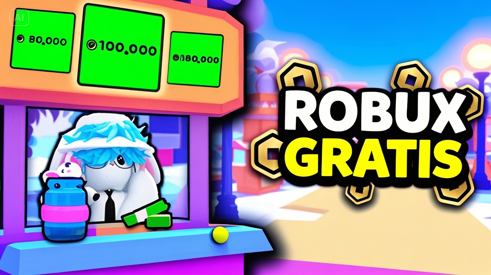

Robux es la moneda virtual oficial de Roblox y permite comprar accesorios, ropa, animaciones, pases de juego y más. Muchos jugadores buscan formas seguras de obtener Robux sin gastar dinero, y aquí te mostraremos cómo hacerlo de manera legal en 2025. 🚀
💡 Métodos oficiales para ganar Robux
- 🎨 Crear y vender ropa o accesorios en el catálogo de Roblox.
- 🎮 Desarrollar juegos y monetizarlos con pases de juego o productos.
- 💳 Roblox Premium: suscripción que te da Robux mensuales.
- 🏆 Eventos oficiales de Roblox que ofrecen Robux o ítems intercambiables.
🆓 Formas gratis de conseguir Robux
No necesitas gastar dinero si aprovechas estas opciones:
- Participar en concursos y sorteos de la comunidad.
- Unirte a grupos de Roblox que reparten Robux a sus miembros.
- Probar eventos con recompensas en juegos populares.
- Canjear códigos promocionales de Roblox.
⚠️ Evita estafas
Recuerda que no existen generadores mágicos de Robux. Nunca compartas tu contraseña ni instales programas extraños. Las únicas formas seguras son las oficiales dentro de Roblox.
🚀 Guía rápida para ganar Robux
- Accede a tu cuenta de Roblox.
- Explora el menú de Avatar Shop o crea un juego propio.
- Vende ropa, accesorios o habilita pases de juego.
- Promociona tu contenido en grupos o redes sociales.
- Disfruta tus Robux obtenidos de forma segura. 🎉